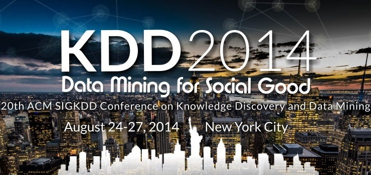

Held in conjunction with KDD 2014, the Data Ethics workshop will address a broad spectrum of ethical issues in data collection, storage, analysis, and sharing.
The workshop will be a forum to explore data science's potential ethical implications -- both positive and negative -- for data analytics practitioners and researchers in academia and industry. Perspectives from those in the humanities and social sciences are also welcome.
News
| August 23 |
|
| August 19 |
|
| August 15 |
|
| July 13 |
|
| June 6 |
|
Topics
Relevant areas of interest include but are not limited to:
- Balancing transparency/openness vs. privacy/security
- Intentional and unintentional impact
- Balancing reward vs. risk of data usage
- Data use and re-use
- Theory vs. practice in data ethics
- Case studies of ethical issues that have arisen in data science
- "Hippocratic Oath for Data Scientists"
- Data ethics and the law
- Commercial / economic dimensions of data ethics
- Safe and effective structures for "data philanthropy"
- Data ownership vs. data as a public good
- What data can/should be collected in public
- Surveillance technologies: pros and cons
- Data anonymization/scrubbing, and data de-anonymization
- Cross-cultural differences in data ethics
- Human data processing and the ethics of microtasking/crowdsourcing
- Development of ethical norms and/or suggested checklists for data practitioners
Program
(Download PDF version of program.)
| 2:00-2:10 | Welcome |
|---|---|
|
Kayla Jacobs (Technion: Israel Institute of Technology) |
|
| 2:10-3:00 | Data of Vulnerable Populations |
|
Data and Human Trafficking
Mining Data Related to Children: Ethical Challenges |
|
| 3:00-3:10 | Poster Pitches |
|
Finding the Most Appropriate Auxiliary Data for Social Graph Deanonymization
Decision Tree Classification on Outsourced Data |
|
| 3:10-4:00 | Privacy |
|
Ethical Privacy Guidelines for Mobile Connectivity Measurements
Considering Privacy in Predictive Modeling Applications |
|
| 4:00-4:30 | Coffee Break |
| 4:30-5:20 | Philosophical Themes in Data Ethics |
|
Big Data, Ethics, and the Social Implications of Knowledge Production
Data Mining and the Discourse on Discrimination |
|
| 5:20-6:00 | Summary Panel |
Important Dates
| Submission deadline |
Sunday, June 8, 2014 at 11:59 PM (EST) EXTENDED: Friday, June 13, 2014 at 11:59 PM (EST) |
| Acceptance notifications | Sunday, July 6, 2014 |
| Camera-ready deadline | Sunday, July 27, 2014 at 11:59 PM (EST) |
| Poster submission deadline | Sunday, August 3, 2014 at 11:59 PM (EST) |
| Workshop |
Sunday, August 24, 2014, 2-6pm @ Bloomberg LP, 731 Lexington Ave, New York City |
Organizers & Contact
- Kayla Jacobs (Technion: Israel Institute of Technology)
- Robert Munro (Idibon)
For questions or comments, e-mail the organizers at
data-ethics-kdd-2014-organizers@googlegroups.com.
KDD 2014
This workshop is run in conjunction with the 20th ACM SIGKDD International Conference on Knowledge Discovery and Data Mining (KDD'14), whose special theme for 2014 is "Data Mining for Social Good."
